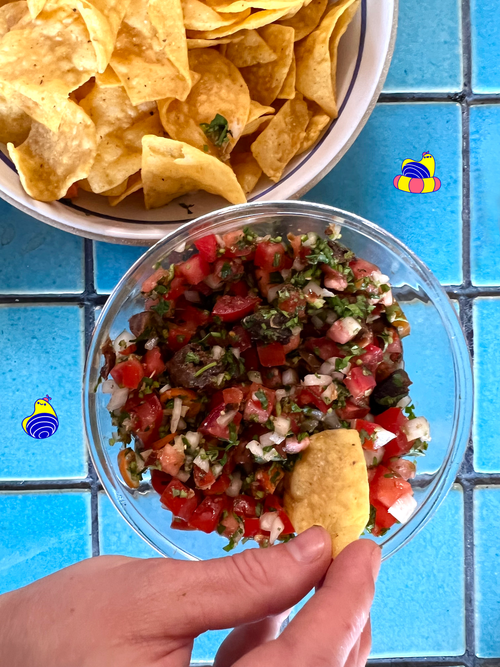

Rockfish Pico De Gallo Recipe

Ingredients
- 3 ripe roma tomatoes, diced small
- 1/2 white onion, diced small
- 1 serrano chili, sliced thin or diced
- 1" knob of ginger, peeled and microplaned
- 1 garlic clove, microplaned
- About 1/2 cup chopped cilantro
- 1 tin of Tiny Fish Co. Rockfish in sweet soy sauce
- salt
- Lime juice
How to make
- Combine the diced tomatoes, onion and serrano chili in a large mixing bowl.
- Add in the garlic, ginger and cilantro.
- Flake the rockfish in the tin and then pour the entire contents into the mixing bowl..
- Mix well, then season as desired with salt and lime juice.